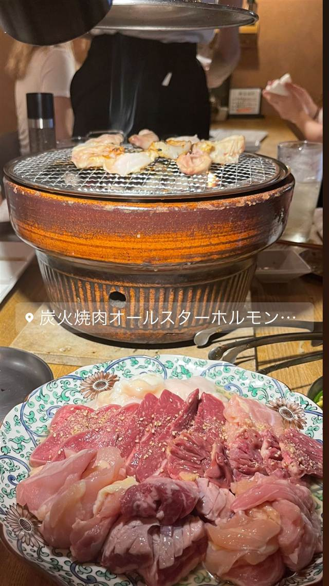

炭火焼肉オールスターズホルモンとんぼ
炭火焼肉オールスターホルモン…
REVIEWS
世間の評判
3.41食べログ
古民家の一軒家とホルモンの質
- 炭火で香ばしく焼き上がるホルモンや絶品の牛タンの美味しさを評価する声が多い
- 飲み放題付きのコースでも量がしっかりあってお得だという声がある
- ホルモンの仕上がりが物足りないと感じたり煙が多いと指摘する声もある
食べログ 口コミ245件
| どこから | 都心 |
|---|---|
| 営業時間 | 月〜木 17:00-23:00 金 17:00-00:00 土・日 16:00-23:00 |
| 予算 | 夜 ¥4,000～¥4,999 |
| 場所 | 中目黒駅 東京都目黒区上目黒1-5-1 |
食べたもの：ホルモン焼肉
NEARBY
近い店・同じ系統の店
-
 ★
焼肉 中目黒駅
びーふてい 中目黒店
1988年創業、和牛一頭買いで味わう名物ガツン焼き
夜 ¥6,000～¥7,999
★
焼肉 中目黒駅
びーふてい 中目黒店
1988年創業、和牛一頭買いで味わう名物ガツン焼き
夜 ¥6,000～¥7,999
-
 ★
焼肉 中目黒
小野田商店
中目黒の路地裏、七輪で焼く500円前後のホルモン
夜 ¥3,000～¥3,999
★
焼肉 中目黒
小野田商店
中目黒の路地裏、七輪で焼く500円前後のホルモン
夜 ¥3,000～¥3,999
-
 ピザ 中目黒駅
聖林館（セイリンカン）
マルゲリータとマリナーラの2種のみ、国産小麦を長期熟成
昼 ¥4,000～¥4,999 夜 ¥4,000～¥4,999
ピザ 中目黒駅
聖林館（セイリンカン）
マルゲリータとマリナーラの2種のみ、国産小麦を長期熟成
昼 ¥4,000～¥4,999 夜 ¥4,000～¥4,999
-
 ピザ 中目黒駅
ピッツエリア エ トラットリア ダ・イーサ（Pizzeria e trattoria da ISA）
世界ピッツァ選手権優勝のナポリピッツァ職人が焼くマルゲリータ
昼 ¥2,000～¥2,999 夜 ¥3,000～¥3,999
ピザ 中目黒駅
ピッツエリア エ トラットリア ダ・イーサ（Pizzeria e trattoria da ISA）
世界ピッツァ選手権優勝のナポリピッツァ職人が焼くマルゲリータ
昼 ¥2,000～¥2,999 夜 ¥3,000～¥3,999
-
 イタリアン 中目黒駅
関谷スパゲティ
真空圧縮で気泡を抜いた自家製極太麺のナポリタンが730円均一
昼 ～¥999 夜 ～¥999
イタリアン 中目黒駅
関谷スパゲティ
真空圧縮で気泡を抜いた自家製極太麺のナポリタンが730円均一
昼 ～¥999 夜 ～¥999
-
 パスタ 中目黒駅
中目黒 ピッツェリア8
350℃の石窯で焼く本格ナポリピッツァと自家製生パスタ
昼 ¥1,000～¥1,999 夜 ¥3,000～¥3,999
パスタ 中目黒駅
中目黒 ピッツェリア8
350℃の石窯で焼く本格ナポリピッツァと自家製生パスタ
昼 ¥1,000～¥1,999 夜 ¥3,000～¥3,999